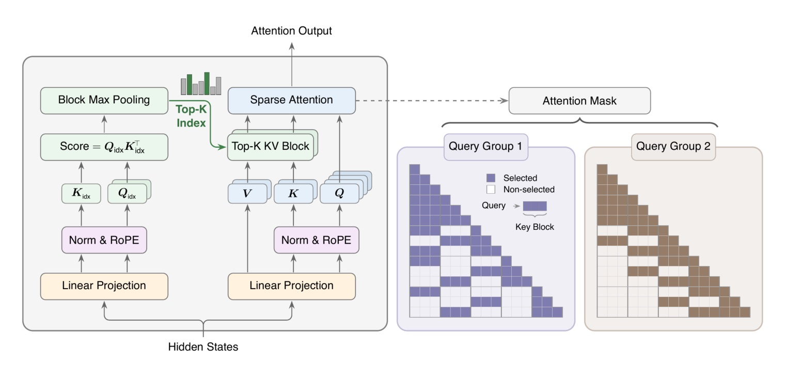
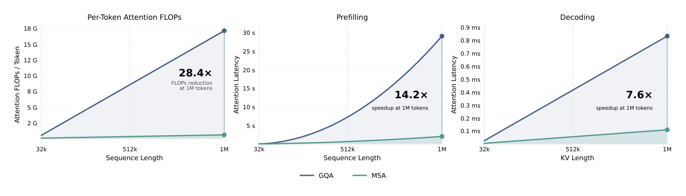
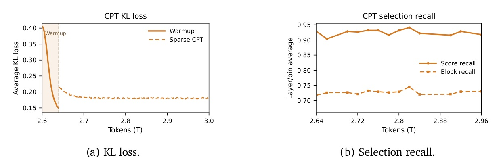

一個極輕量 Index Branch 對 KV block 打分、每個 GQA group 各自選 Top-k；Main Branch 只對選中 block 做精確 softmax。109B MoE 上與 full-attn 打平，1M context FLOPs 降 28.4×、prefill 14.2×、decode 7.6×。

| Benchmark | Full | MSA-PT | MSA-CPT |
|---|---|---|---|
| MMLU | 67.0 | 67.2 | 66.8 |
| GSM8K | 76.2 | 77.7 | 73.7 |
| HumanEval | 61.0 | 64.0 | 57.9 |
| RULER-8K | 79.8 | 84.2 | 77.2 |
| VisualWebBench | 55.6 | 68.4 | 59.4 |
| EgoSchema | 29.6 | 37.6 | 25.8 |
| VideoMME | 41.11 | 45.48 | 39.65 |
MSA-PT 在 math / image / video / long-context retrieval 多數 benchmark 反而超越 dense baseline（EgoSchema +8.0、VisualWebBench +12.8）；MSA-CPT 較保守、貼近原 checkpoint。


| Method | 選擇粒度 | Top-k 共享 | 一句話定位 |
|---|---|---|---|
| NSA | block × 3 branches | — | compressed + selected + SWA 三分支並行，最重 |
| MoBA | 大 KV block | per-group | indexer 只靠 LM gradient、block-averaged key 打分 |
| DSA | token-level | 全 head 共用單一 Top-k | 建在 MLA (MQA mode) 上 |
| MSA | block | per-GQA-group 各自 | KL-aligned + detach + warmup，最小必要組件 |
MSA 同時取 per-GQA-group Top-k 共享（multi-group block-granular retrieval）與 block-level 選擇（contiguous KV reads，kernel 友善）—— 這兩軸一起取是它與前述方法的核心區別。
Index Branch 打分 + per-group Top-k + KL-aligned indexer + kernel co-design。1M context FLOPs 降 28.4×、與 full-attn 打平、多模態反超。Occam's razor 勝過堆組件。
A lightweight Index Branch scores key–value blocks and independently selects a Top-k subset for each GQA group, enabling group-specific sparse retrieval while maintaining efficient block-level execution; the Main Branch then performs exact block-sparse attention over only the selected blocks.
輕量 Index Branch 對 KV block 打分、為每個 GQA group 獨立選 Top-k 子集，達成 group-specific 稀疏檢索同時維持 block 層級高效執行；Main Branch 隨後只對選中 block 做精確 block-sparse 注意力。Abstract p.1
We attribute this regression to a self-distillation effect: the backbone can lower the KL loss by simplifying the Main Branch attention distribution, rather than by improving the Index Branch.
我們把這種退化歸因於 self-distillation 效應——backbone 可以靠簡化 Main Branch 注意力分佈來降低 KL loss，而不是靠改進 Index Branch。（這正是為何 KL gradient 必須 detach、限制在 Index Branch 內）§B.3 p.25
If top-k selection is enabled from step zero, the Index Branch must track a rapidly moving target while its own selections are still nearly random. Poor early selections then route the Main Branch to uninformative tokens.
若從第零步就開 top-k 選擇，Index Branch 必須追蹤一個快速移動的目標、而它自己的選擇還近乎隨機；早期的爛選擇於是把 Main Branch 導向無資訊的 token。§B.4 p.26
Since ⅔·Bk ≫ G in practice, we choose KV-outer iteration with Q gather to maximize arithmetic intensity.
因實務上 ⅔·Bk 遠大於 G，我們選擇 KV-outer 迭代搭配 Q gather 以最大化算術強度。§4.2 p.7–8
When the forced selection of the first block and the fixed local window are removed, the trained model still exhibits both structures: attention concentrates on the sequence prefix when useful, and nearby tokens remain frequently selected.
當移除對 first block 與固定 local window 的強制選擇後，訓練好的模型仍展現這兩種結構——有用時注意力會集中在序列前綴、鄰近 token 也仍頻繁被選。（故最終 recipe 不硬編這些 prior）§C.2 p.29